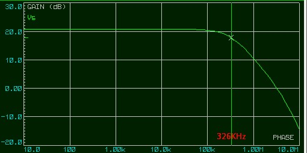
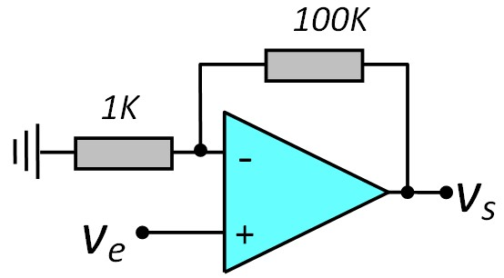
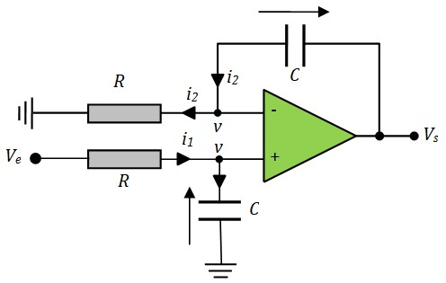

Présentation
Ampli-Op en Linéaire
Introduction
Ampli Inverseur
Ampli Non Inverseur
Montage suiveur
Sommateur Inverseur
Sommateur Non Inverseur
Différenciateur
Convertisseur Courant-Tension
Bande passante d'un amplificateur
Deux Ampli_Ops en cascade
Intégrateur Inverseur
Intégrateur Non Inverseur
Ampli-Op en Non Linéaire

Amplificateur Opérationnel
Présentation
C'est un amplificateur Différentiel \(V_s = A(V^+ - V^-) \). Il est caractérisé par :
- Très grand gain : A ≈ 106
- L'impédance d'entrée sur chacune de ces entrées est très élevée. Le plus souvent on la considère comme infinie, ce qui implique que les courants d'entrée sont nuls
- Très faible impédance de sortie Zs ≈ 0
Ampli-Op en fonctionnement Linéaire
Pour utiliser l'amplificateur opérationnel dans des applications telles que l'amplification ou le filtrage, il doit fonctionner en mode linéaire, ce qui nécessite l'emploi d'une contre-réaction négative.
En mode linéaire, on utilisera l'approximation suivante :
$$\quad V^+ \; = \; V^- \quad$$
Amplificateur Inverseur
V+ = 0, donc V- = 0 = masse virtuelle
$$ V_e = R_1\; i $$ $$ V_s = -R_2\; i $$ $$ V_s \; = \; -\frac{R_2}{R_1}\; V_e $$On peut faire une autre approche sans passer par les courants
Puisque le courant d'entrée dans l'Ampli-Op est nul, on peut calculer l'expression de la tension sur l'entrée (-) à l'aide du théorème de Millman sans tenir coopte de l'Ampli-Op
$$V^- \; = \; \frac{R_1V_s+R_2V_e}{R_1 + R_2} $$Comme V+ = V- , on aura :
$$\frac{R_1V_s+R_2V_e}{R_1 + R_2} \; = \; 0$$Ce qui donne :
$$ V_s \; = \; -\frac{R_2}{R_1}\; V_e $$
On remarque que le gain du montage ne dépend pas du gain propre de l'Ampli-OP mais seulement des résistances externes. C'est la conséquence directe de l'approximation \(V^+=V^-\)
Amplificateur Non Inverseur
$$ V^+ = V_e $$ $$ V^- = \frac{R_1}{R_1+R_2}V_s $$Comme V+ = V-
$$ V_e = \frac{R_1}{R_1+R_2}V_s $$$$ V_s \; = \; \left(1 + \frac{R_2}{R_1} \right)\; V_e $$
- Ce montage a l'avantage d'avoir une très grande impédance d'entrée. Il n'y aura pas de perte d'adaptation même si Ve est issue d'une source ayant une mauvaise impédance de sortie
- Ce montage ne peut pas être utilisé comme atténuateur
Montage suiveur
\( v_s\; = \; v_e\)
\( Z_e\; \approx \; \infty\) \( Z_s\; \approx \; 0 \)
Ce montage de gain 1 est très utilisé comme adaptateur d'impédance car il a une impédance d'entrée quasi infinie et une impédance de sortie quasi nulle
Sommateur Inverseur
\(v^- \; = \; \frac{\frac{v_1}{R_1} + \frac{v_2}{R_2} + \frac{v_s}{R_B} }{\frac{1}{R_1}+\frac{1}{R_2}+\frac{1}{R_B}} \) , \( v^+ \; = \; 0\)
En appliquant \( v^+ = v^- \) , on obtient
$$ v_s \; = \; -R_B \left( \frac{v_1}{R_1} \; + \; \frac{v_2}{R_2} \right) $$
Si on prend \( R_1 = R_2 = R_A\), on obtient :
$$ v_s \; = \; -\frac{R_B}{R_A}(v_1 + v_2) $$
Sommateur Non Inverseur
\( v^+ = \frac{R_2v_1 + R_1 v_2}{R_1 + R_2} \) \( v^- = \frac{R_A}{R_A + R_B}v_s \)
En appliquant \( v^+ = v^- \) , on obtient
$$ v_s = \frac{R_A + R_B}{R_A(R_1 + R_2)} (R_2 v_1 + R_1 v_2) $$
Si on prend \( R_1 = R_2 \), on obtient :
$$ v_s = \frac{R_A + R_B}{2R_A}(v_1 + v_2) $$
Si en plus \( R_A = R_B \), on obtient :
$$ v_s = v_1 + v_2 $$
Différenciateur
\(v^+ = \frac{R_2}{R_1+R_2}v_2 \) \( v^- = \frac{R_B\;v_1 + R_A\; v_s}{R_A + R_B} \)
En appliquant \( v^+ = v^- \) , on obtient
$$ v_s = \frac{R_A + R_B}{R_A} \left( \frac{R_2}{R_1 + R_2}v_2 \; - \; \frac{R_B}{R_A + R_B}v_1 \right) $$
Si on prend \( \frac{R_A}{R_B}= \frac{R_1}{R_2} \) on obtient un amplificateur de différence
$$ v_s = \frac{R_B}{R_A}(v_2 - v_1) $$
Si on prend \( R_1=R_2\) et \( R_A=R_B\) on obtient :
$$ v_s = v_2 - v_1 $$
Convertisseur Courant-Tension
Il arrive souvent que l'on désire convertir un courant en une tension proportionnelle par exemple pour pouvoir la numériser à l'aide d'un microcontrôleur
\( v^- = 0 = masse \; virtuelle \)
$$ V_s \; = -\; R \; i$$
Bande passante d'un amplificateur
Quand on réalise un amplificateur de gain Av, on s'aperçoit qu'il n'arrive pas à maintenir son gain pour les fréquences élevées. A partir d'une fréquence fo, le gain commence à chuter. Cette fréquence est appelée fréquence de coupure ou bande passante de l'amplificateur
Si on trace la réponse en fréquence de plusieurs amplificateurs ayant des gains différents réalisés avec le même Ampli_Op, on obtient le réseau de courbes suivant :
On s'aperçoit que le gain et la bande passante sont inversement proportionnels. Quand on augmente le premier, on perd sur le deuxième et vice versa.
Cette constatation découle d'une propriété fondamentale d'un amplificateur: Le produit gain bande passante est une constante
PGBP = Gain × Bande passante = Constante
Par exemple, pour le réseau de courbes ci-dessus, on a utilisé un Ampli_Op caractérisé par : BGBP = 1 MHz
Ce paramètre est à chercher dans la datasheet du circuit. Il est souvent désigné par Unity Gain Bandwidth (Bande passante pour gain unité)
Par exemple, avec un Ampli_Op caractérisé par PGBP=1MHz (comme le 741), il est impossible de réaliser un ampli audio de gain 1000. En effet, pour l'audio, il faut une bande passante de 20Khz. Ce qui nécessite un Amp-OP caractérisé par PGBP ≥ 1000 × 20KHz = 2MHz
Deux Ampli_Ops en cascade
Quand on met deux Ampli_OPs en cascade, on n'a pas de perte d'adaptation vu que l'impédance de sortie est quasiment nulle. Pour l'amplificateur non inverseur, on a en plus l'impédance d'entrée quasi infinie.
L'amplificateur global sera caractérisé par :
- Gain : \( A_v = A_{v1}\times A_{v2} \)
- Bande passante : \( f_0 = min(f_{01}, f_{02})\)
Exemple :
Nous allons vérifier tout ça à l'aide de l'Ampli_Op TL081 caractérisé par un PGBP légèrement supérieur à 3 MHz
Un premier ampli de gain 11
Gain : Av1 = 11 (20.8 dB)
Bande passante (3 dB) : fo = 326 KHz
PGBP = 11 × 326 KHz ≈ 3.58 MHz
Un deuxième ampli de gain 101
Gain : Av1 = 101 (40.1 dB)
Bande passante (3 dB) : fo = 34.1 KHz KHz
PGBP = 101 × 34.1 KHz ≈ 3.44 MHz
Les deux en cascade
Gain : Av1 = 1111 (60.9 dB)
Bande passante (3 dB) : fo = 34.1 KHz
Ceci confirme que le gain total est le produit des deux gains et la bande passante est la plus faible des deux
Intégrateur Inverseur
$$ V_e = R \; i \quad ⇒ \quad i = \frac{1}{R}V_e $$ $$ i= C\frac{dV_c}{dt} \; = -C\frac{dV_s}{dt} $$ $$ \frac{1}{R}V_e \; = -C\frac{dV_s}{dt} $$$$ V_s \; = - \frac{1}{RC} \int V_e(t)dt $$
Problème de l'intégrateur
Normalement, si on intègre un signal alternatif; pendant l'alternance positive, le condensateur intègre (cumule) un courant dans un sens. Pendant l'autre alternance, le condensateur intègre un courant de même valeur dans l'autre sens, on obtient un signal de sortie centré sur 0 (valeur moyenne nulle)
Malheureusement, dans la pratique, les choses ne se passent pas exactement comme prévu. Pendant une alternance, le condensateur va intégrer un petit peu plus de courant que pendant l'autre alternance. La valeur moyenne du signal de sortie va augmenter (ou diminuer) continuellement jusqu'à saturation de la sortie de l'Ampli_Op. Ce dysfonctionnement est en général dû à une de ces cause (ou de leur cumul) :
- Même si le courant d'entrée \(i_i\) de l'Ampli_Op est très faible, il n'est pas tout à fait nul et il a toujours le même sens (entrant). Pendant l'alternance positive du signal d'entrée, le condensateur intègre le courant \( (i_e - i_i)\). Pendant l'alternance négative, il intègre le courant \( (i_e + i_i)\).
- Les deux demi-alternances du signal d'entrée peuvent ne pas avoir exactement la même durée
- Les deux demi-alternances du signal d'entrée peuvent ne pas avoir exactement la même amplitude
- Ces trois raisons peuvent conduire à l'accumulation d'une composante continue dans le condensateur et la saturation de l'amplificateur
La solution
Pour remédier à ce problème, on rajoute une résistance de fuite Rf en parallèle sur le condensateur. Cette résistance va décharger la composante continue qui s'accumule dans le condensateur et assurer que le signal de sortie reste centré sur zéro
Il faut que la valeur de la résistance soit importante pour ne pas influencer sur le fonctionnement de l'intégrateur. Pour essayer de trouver une règle pour le choix de Rf, je vais comparer les fonction de transfer de l'intégrateur pur avec celle de l'intégrateur avec Rf
Si on sait que l'impédance d'un condensateur est \( \frac{1}{jCω} \), il est assez facile de déterminer les fonction de transfert. On exprime V- à l'aide de Millman, et fait V- = V+ = 0
- Intégrateur pur : \( \frac{V_s}{V_e} = - \frac{1}{RC} \frac{1}{jCω} \)
- Intégrateur corrigé : \( \frac{V_s}{V_e} = - \frac{R_f}{R} \frac{1}{1+jR_fCω} \)
- Si on fait de sorte que \(R_fCω ≫1 \), on peut négliger le 1 et on aura à peu près la même
fonction de
transfert pour les deux montages
Par exemple : Si f = 1kHz, C = 100nf ⇒ \(\frac{1}{Cω} = 1592 \), Une résistance Rf entre 15kΩ et 100 KΩ devrait faire l'affaire
Exemple :
Intégrateur Non Inverseur
\( V_e - v = R i_1 = RC \frac{dv}{dt} \)
\( v = Ri_2 = RC \frac{dV_s}{dt}- RC \frac{dv}{dt} \)
Si on ajoute les deux équations on obtient :
\( V_e = RC \frac{dV_s}{dt} \)
$$ V_s \; = \frac{1}{RC} \int V_e(t)dt $$
Exemple :
Ampli-Op en fonctionnement Non Linéaire
Quand on utilise l'amplificateur opérationnel en boucle ouverte ou avec une contre-réaction positive, il fonctionne en mode comparateur. Dans ce mode, l'amplificateur opérationnel compare les tensions appliquées à ses deux entrées (non-inverseuse et inverseuse) et produit une sortie qui ne peut prendre qu'une des deux valeurs de saturation maximale: Saturation positive VOH ou saturation négative VOL
$$V^+ \; \gt V^- \; ⇒ \; V_s \; = \; V_{OH}$$ $$V^- \; \gt V^+ \; ⇒ \; V_s \; = \; V_{OL}$$
Les tension de saturation VOH et VOL son voisines (mais pas égales) au tension d'alimentation Vcc et Vee de l'Ampli-Op
Dans la suite de ce tuto, j'utiliserai souvent VOH = +12V , VOL = -12V
Détecteur de seuil
Utilisé pour déclencher une action lorsqu'un signal dépasse un certain seuil. Par exemple, un comparateur peut allumer une LED lorsque la température dépasse une valeur critique, ou activer un relais lorsque le niveau de tension atteint un certain point.
Problème du Détecteur seuil
Un comparateur à seuil unique change d'état dès que le signal d'entrée traverse le seuil fixe, ce qui le rend sensible aux fluctuations rapides et au bruit électrique. Cela peut entraîner des oscillations indésirables autour du point de commutation, surtout avec un signal d'entrée bruité qui traverse lentement le seuil
Pour cette raison, on va lui préférer un comparateur à deux seuils comme le Trigger de Schmitt
Le Trigger de Schmitt
Le trigger de Schmitt est un comparateur à deux seuils. La différence entre les seuils crée une "zone morte" appelée hystérésis, qui empêche les commutations intempestives dues à un signal bruité.
Le seuil de comparaison sur l'entrée (V+) dépend de la tension de référence (fixe) Vr et de la tension de sortie Vs.
$$V^+ \, = \; \frac{R_2V_s+R_1V_r}{R_1+R_2} $$
Vs peut prendre deux valeurs, soit VOH soit VOL. Il en résulte que V+ peut aussi prendre deux valeurs distinctes et on obtient un comparateur à deux seuils de comparaison. Nous les appelleront \(V_{TH}\) et \(V_{TL}\)
- \(V_s\: = \: V_{OH} \quad ⇒ \quad V^+\; = \frac{R_2V_{OH}\;+\;R_1V_r}{R_1+R_2} \quad = \quad V_{TH}\)
- \(V_s\; = \; V_{OL} \quad ⇒ \quad V^+\; = \frac{R_2V_{OL}\;+\;R_1V_r}{R_1+R_2} \quad = \quad V_{TL}\)
Comme on peut le constater sur la figure, dès que le signal d'entrée coupe le seuil courant, La sortie bascule vers l'autre tension de saturation ce qui provoque le changement de seuil. A partir de là, le signal doit varier d'une valeur au moins égale à l'hystérésis pour déclencher un nouveau basculement.
Exercice 1 :
Calculer les seuils de comparaison \(V_{TH}\) et \(V_{TL}\),
(On prend \(V_{OH}=+12V\), \(V_{OL}=-12V\))
Exercice 2 :
Calculer Vr et le rapport \(\frac{R_1}{R_2}\) pour avoir les seuils \(V_{TH}= 9V\) et \(V_{TL}= 3V\)
(On prend \(V_{OH}=+12V\), \(V_{OL}=-12V\))
Multivibrateur Astable
Le multivibrateur astable utilise un trigger de Schmitt associé à un circuit RC pour obtenir un générateur de signal carré. C'est ce qu'on appelle un Oscillateur à relaxation
Le Trigger de Schmitt oblige l'Ampli-Op à fonctionner en comparateur et fixe les seuils de comparaison. Le cycle d'oscillation est contrôlé par le chargement et le déchargement du condensateurs. Lorsque le condensateur atteint le seuil de comparaison courant, il déclenche le basculement du circuit vers l'autre état. Ce processus se répète continuellement, produisant un signal périodique.
$$T_{ch} = RC\; Ln\left( \frac{V_{OH}-V_{TL}}{V_{OH}-V_{TH}} \right) $$
$$T_{dch} = RC\; Ln\left( \frac{V_{TH}-V_{OL}}{V_{TL}-V_{OL}} \right) $$
Analyse du circuit :
- État initial : Capa déchargée ⇒ V-=0; Vs=Voh ⇒ V+=Vth
- La capa (V-) se charge ver Voh avec la constante de temp RC (L'ampli-Op la compare avec V+=Vth)
- Dès que V- devient > à Vth, Vs bascule à Vol, V+ bascule à Vtl
- Maintenant la capa voit Vol de l'autre coté de R. Elle se décharge vers Vol avec la constante de temps RC
- Dès que V- devient < à Vtl, Vs bascule à Voh, V+ bascule à Vth
- La capa se charge vers Voh et le cycle recommence
Version Symétrique
Si on prend Vr = 0, on aura :
\( V_{TH} = \frac{R_2}{R_1+R_2}V_{OH} \)
\( V_{TL} = \frac{R_2}{R_1+R_2}V_{OL} \)
Si les alimentations sont symétriques, on aura \( V_{OH} = - V_{OL} = V_{sat}\) et les seuils aussi seront symétriques\( V_{TH} = - V_{TL}=\frac{R_2}{R_1+R_2}V_{sat} = V_T\)
$$\frac{T}{2} = RC\; Ln\left( \frac{V_{sat}+V_{T}}{V_{sat}-V_{T}} \right) $$
$$T = 2RC\; Ln\left( \frac{R_1+2R_2}{R_1} \right) $$
Si R1 = R2 :
$$T = 2RC\; Ln(3)$$